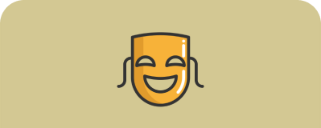

Программа курса
1. Как создают кино
8 сентября 20:00
Данила Кузнецов

2. Взгляд драматурга
10 сентября 20:00
Данила Кузнецов

2. Взгляд драматурга
10 сентября 20:00
Данила Кузнецов

4. Взгляд монтажёра
15 сентября 20:00
Данила Кузнецов

5. Жанры в кино
17 сентября 20:00
Данила Кузнецов
6. Язык кино. Семинар
20 сентября 13:00
Данила Кузнецов
7. Взгляд кинокритика
221 сентября 19:00
Дмитрий Скворцов

8. Осознанный зритель.
Семинар
22 сентября 19:00
Дмитрий Скворцов